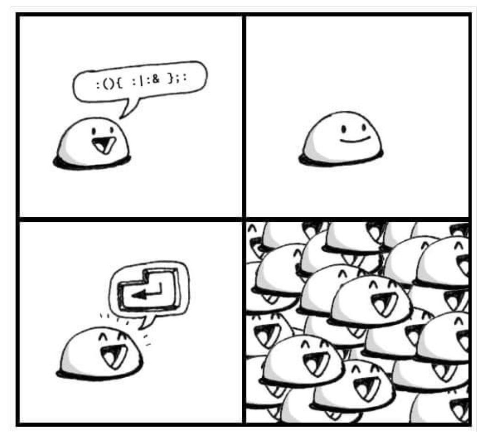

Home | Markdown | Gemini | Microblog | Street photography | Wishlist
'\ '\ '\ . . |>18>>
\ \ \ . ' . |
O>> O>> O>> . 'o |
\ .\. .. .\. .. . |
/\ . /\ . /\ . . |
/ / . / / .'. / / .' . |
jgs^^^^^^^`^^^^^^^^^^^^^^^^^^^^^^^^^^^^^^^^^^^^^^^^^^^^^^^^^^^^^^
Art by Joan Stark, mod. by Paul Buetow
#!/usr/bin/env bash
log () {
local -r level="$1"; shift
local -r message="$1"; shift
local -i pid="$$"
local -r callee=${FUNCNAME[1]}
local -r stamp=$(date +%Y%m%d-%H%M%S)
echo "$level|$stamp|$pid|$callee|$message" >&2
}
at_home_friday_evening () {
log INFO 'One Peperoni Pizza, please'
}
at_home_friday_evening
❯ ./logexample.sh INFO|20231210-082732|123002|at_home_friday_evening|One Peperoni Pizza, please

#!/usr/bin/env bash
outer() {
inner() {
echo 'Intel inside!'
}
inner
}
inner
outer
inner
❯ ./inner.sh /tmp/inner.sh: line 10: inner: command not found Intel inside! Intel inside!
#!/usr/bin/env bash
outer1() {
inner() {
echo 'Intel inside!'
}
inner
}
outer2() {
inner() {
echo 'Wintel inside!'
}
inner
}
outer1
inner
outer2
inner
❯ ./inner2.sh Intel inside! Intel inside! Wintel inside! Wintel inside!
#!/usr/bin/env bash
some_expensive_operations() {
echo "Doing expensive operations with '$1' from pid $$"
}
for i in {0..9}; do echo $i; done \
| xargs -P10 -I{} bash -c 'some_expensive_operations "{}"'
❯ ./xargs.sh bash: line 1: some_expensive_operations: command not found bash: line 1: some_expensive_operations: command not found bash: line 1: some_expensive_operations: command not found bash: line 1: some_expensive_operations: command not found bash: line 1: some_expensive_operations: command not found bash: line 1: some_expensive_operations: command not found bash: line 1: some_expensive_operations: command not found bash: line 1: some_expensive_operations: command not found bash: line 1: some_expensive_operations: command not found bash: line 1: some_expensive_operations: command not found
#!/usr/bin/env bash
some_expensive_operations() {
echo "Doing expensive operations with '$1' from pid $$"
}
export -f some_expensive_operations
for i in {0..9}; do echo $i; done \
| xargs -P10 -I{} bash -c 'some_expensive_operations "{}"'
❯ ./xargs.sh Doing expensive operations with '0' from pid 132831 Doing expensive operations with '1' from pid 132832 Doing expensive operations with '2' from pid 132833 Doing expensive operations with '3' from pid 132834 Doing expensive operations with '4' from pid 132835 Doing expensive operations with '5' from pid 132836 Doing expensive operations with '6' from pid 132837 Doing expensive operations with '7' from pid 132838 Doing expensive operations with '8' from pid 132839 Doing expensive operations with '9' from pid 132840
#!/usr/bin/env bash
some_other_function() {
echo "$1"
}
some_expensive_operations() {
some_other_function "Doing expensive operations with '$1' from pid $$"
}
export -f some_expensive_operations
for i in {0..9}; do echo $i; done \
| xargs -P10 -I{} bash -c 'some_expensive_operations "{}"'
#!/usr/bin/env bash
foo() {
local foo=bar # Declare local/dynamic variable
bar
echo "$foo"
}
bar() {
echo "$foo"
foo=baz
}
foo=foo # Declare global variable
foo # Call function foo
echo "$foo"
❯ ./dynamic.sh bar baz foo
#!/usr/bin/env bash
declare -r foo=foo
declare -r bar=bar
if [ "$foo" = foo ]; then
if [ "$bar" = bar ]; then
echo ok1
fi
fi
if [ "$foo" = foo ] && [ "$bar" == bar ]; then
echo ok2a
fi
[ "$foo" = foo ] && [ "$bar" == bar ] && echo ok2b
if [[ "$foo" = foo && "$bar" == bar ]]; then
echo ok3a
fi
[[ "$foo" = foo && "$bar" == bar ]] && echo ok3b
if test "$foo" = foo && test "$bar" = bar; then
echo ok4a
fi
test "$foo" = foo && test "$bar" = bar && echo ok4b
❯ ./if.sh ok1 ok2a ok2b ok3a ok3b ok4a ok4b
#!/usr/bin/env bash # Single line comment # These are two single line # comments one after another : <<COMMENT This is another way a multi line comment could be written! COMMENT
#!/usr/bin/env bash echo foo echo echo baz >> $0 echo bar
❯ ./if.sh foo bar baz ❯ cat if.sh #!/usr/bin/env bash echo foo echo echo baz >> $0 echo bar echo baz